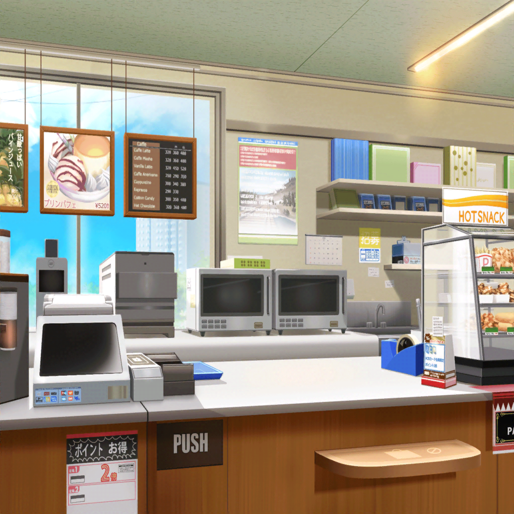

コンビニ
リサ
モカ～、本当にありがとー！
モカ
はい～？
なんのことですか～？
リサ
作詞のことだよ！
モカが、みんなに聞いてみたらって言ってくれたおかげで、
色んな話が聞けちゃった☆
モカ
どんな話が聞けたか、
あたしにも教えてくださいよ～
リサ
えっとー、蘭はパンケーキ。香澄はパウンドケーキ。
こころはプリン……って感じかな☆
モカ
なるほど、蘭はパンケーキかあ……って、
なんでみんなお菓子になっちゃってるんですか？
謎だ〜
リサ
けどさ～、モカ。
アタシは、軽い気持ちで作詞を始めてみようって思ったけど、
やってみたら本当にいろんな発見があってびっくりしたよ～
モカ
発見って、例えば～？
リサ
まず作詞には、みんなそれぞれ
いろんな方法があるってことかな？
だから逆に言うと、やり方に正解も不正解もないってこと
モカ
へぇ～、そうなんですか～
リサ
あと、作詞とお菓子作りって、意外と似てたってこと☆
モカ
おぉ～、さすが『おかし職人』ですね～
リサ
あはははっ！
けど、そんなこと今まで想像もしなかったもんな～
ホントにビックリって感じだったよ
リサ
アタシにはどんな方法が合うのか、
歌詞を作りながらじっくり考えてみようって思ってるんだ
モカ
あ、そう言えば、蘭がリサさんの作詞が完成したら
見せてほしいって言ってましたよ～
リサ
もちろん！ そのつもりだよ～！
蘭と香澄とこころには、絶対に見せるつもり！
モカ
えー、あたしにも見せてくださいよ〜
リサ
もちろんモカにも見せるってばっ♪
楽しみにしててよね～
モカ
は～い
モカ
で～、リサさんは、
どんなことをテーマにして、歌詞を書いてみるんですか～？
リサ
それは、やっぱり……
アタシの１番好きなもの……かなっ？
モカ
リサさんの一番好きなもの～？
モカ
はっ？
ひょっとしてモカちゃんのことですか～？
リサ
あははっ！
もちろんモカも好きだよ～？
だけど、今回はごめ～ん
リサ
モカの歌は絶対いつか作るんで、今回は許して
モカ
絶対ですよ、約束ですからね～
リサ
うん、約束！
リサ
……あのね実は、出だしは決まってるんだ
モカ
おおー。そこまで言われちゃうと気になるな〜。
出だし、教えてくださいよ～
リサ
……ていうか、絶対笑わない？
モカ
笑いませんてー
リサ
絶対だよ、絶対笑わないでよ！
モカ
はーい
リサ
えっとね……出だしは……
リサ
『月の光かすかに照らす、青い薔薇の物語』
リサ
……って感じなんだけど……どうかな？
モカ
………………はい
リサ
何、はいって！？ 間もあったし！
モカ
いや～、ホントにいいな～って、思ってますよ～。
すっごく頑張った感じ？ しますよ～？
リサ
何か『頑張った感じ』って、すっごいヤなんだけど！
モカ
……ぷっ、あははは～
リサ
あーーっ！ モカぁ～！
ついに笑ったな～っ！ 笑わないって言ったじゃ～～ん！
１時間後
リサ
それじゃあ、モカ、先に上がらせてもらうね～。
あとはよろしく頼んだっ♪
モカ
はーい、任せてくださーい
モカ
ていうか、リサさんも作詞コンテストの入賞目指して
頑張ってくださいね～
リサ
うん！ ありがとー☆
リサ
……あ！ そうだっ！ あれを買っていかなきゃっ！
モカ
……え？ リサさん、どうしたんですか～？
そんなお菓子の棚なんか見て～
リサ
……あ、悪いけどモカ、これ買っていくんで、
レジ打ってくれる？
モカ
え？
リサさん、これ全部１人で食べるんですか……？
モカ
パンケーキと、パウンドケーキと、プリン……？
ちょっと食べ過ぎじゃないですか～？
リサ
あはははっ☆
これは作詞の三種の神器だからねっ！
モカ
へ～？ 作詞の……三種の神器？
……どういうこと～？ 教えてください～〜
リサ
その話はまた今度、ね☆
それじゃあ、アタシも頑張るからね～！